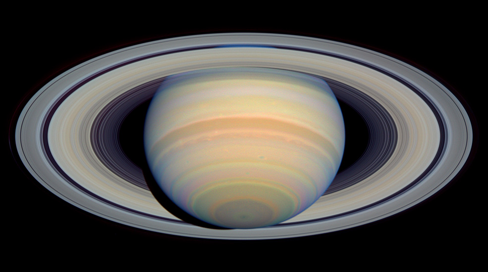
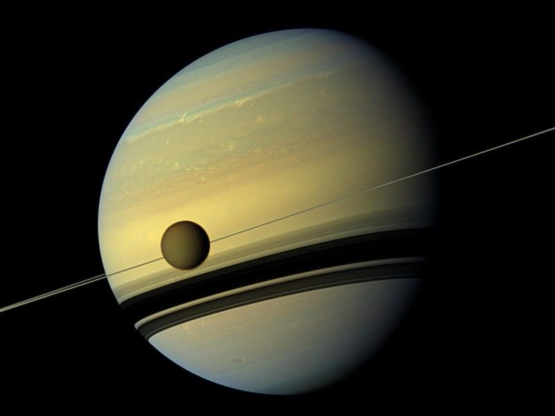
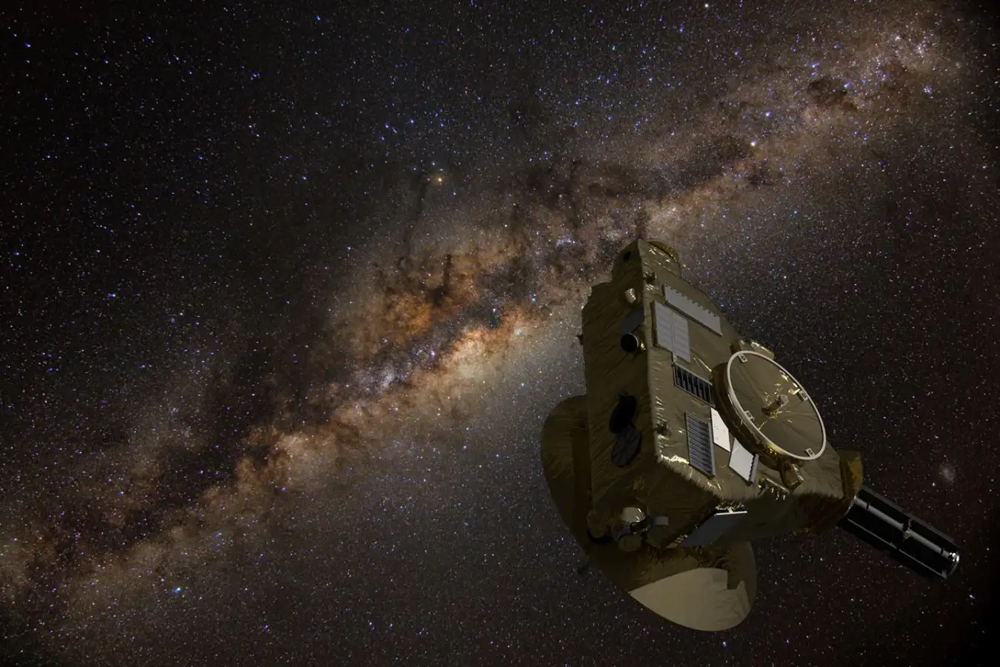
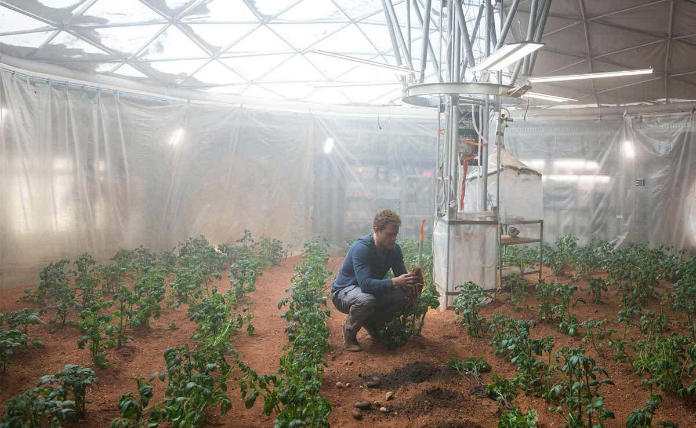
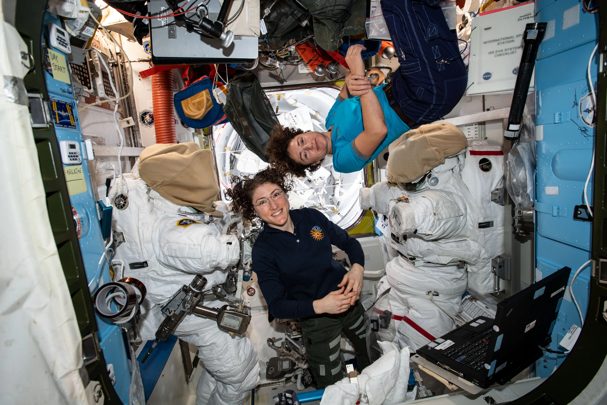
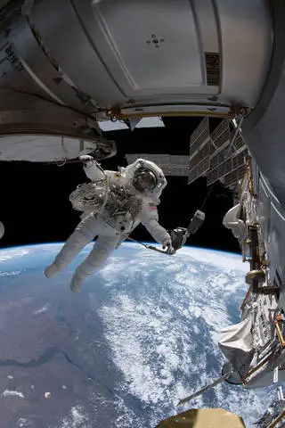
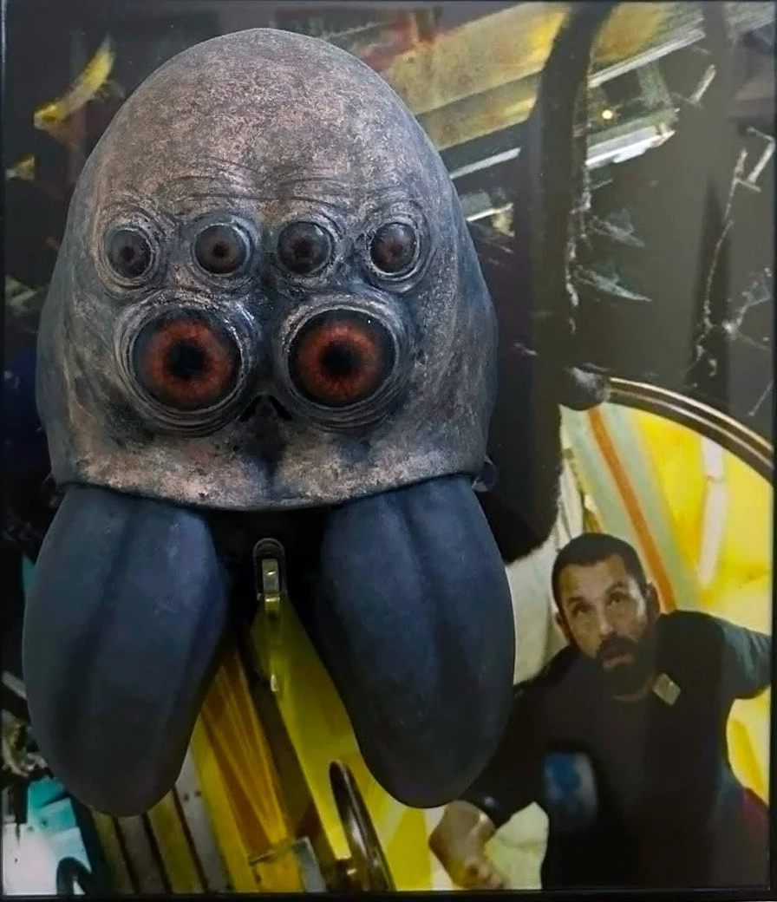
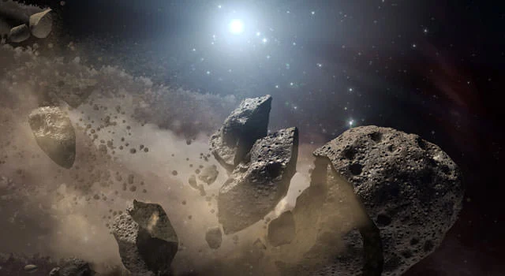
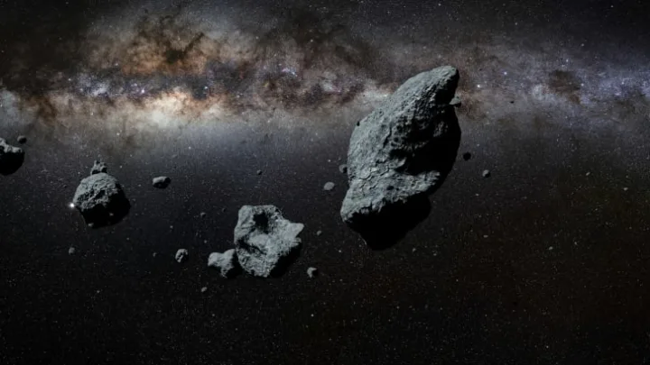
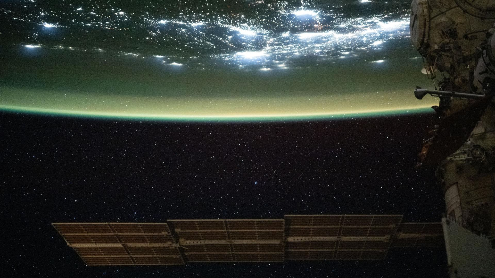

Latest Updates from the Crew
02/04/2302 (23:01 GMT+6)
MINERVA ONE leaves the Earth's Atmosphere.

A crew member floating in the space cabin
28/06/2302 (03:24 GMT+6)
MINERVA ONE passes Saturn, capturning breath-taking photos of Rings of Saturn.


17/08/2302 (15:09 GMT+6)
MINERVA ONE reaches the edge of the solar system. Goodbye, sunshine!

MINERVA ONE leaves solar system
21/10/2302 (19:45 GMT+6)
Biologists on MINERVA ONE monitoring the growth of Earth plants on the spaceship green house.

Green house on MINERVA ONE
01/01/2303 (00:00 GMT+6)
MINERVA ONE crew members whishes you happy new year from the outter space!

04/19/2303 (00:02 GMT+6)
MINERVA ONE picks up unknown radio signal. Unkown organism detected on the exterior of the space ship.

A crew member sent to investigate the organism
04/25/2303 (15:09 GMT+6)
A gigantic anthropod like organism, not hostile, found onboard.

A crew member confront the spider-like organism
08/31/2303 (15:09 GMT+6)
The spider-like organism companies crew member on MINERVA ONE continues thier journey to the
destination.

The friendly creature and one of our crew member
11/30/2303 (05:45 GMT+6)
MINERVA ONE passes through a dense asteroid belt.


02/11/2304 (09:18 GMT+6)
MINERVA ONE Prepares for landing on K2-18z, our destination.
